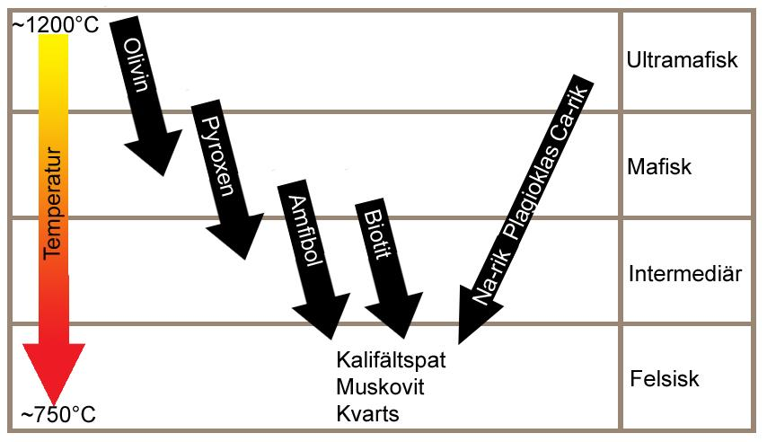
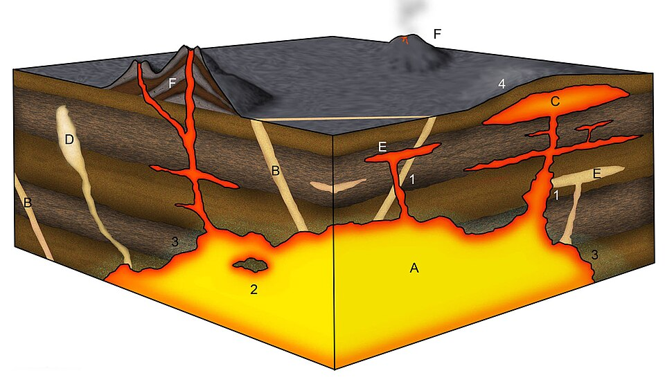
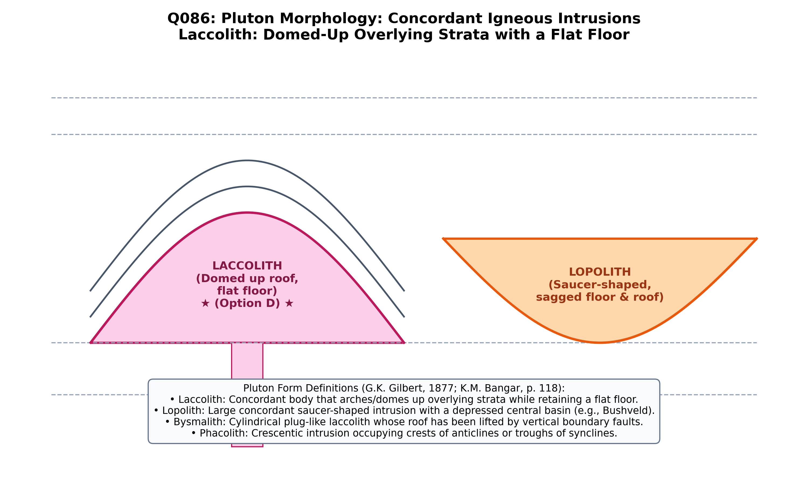
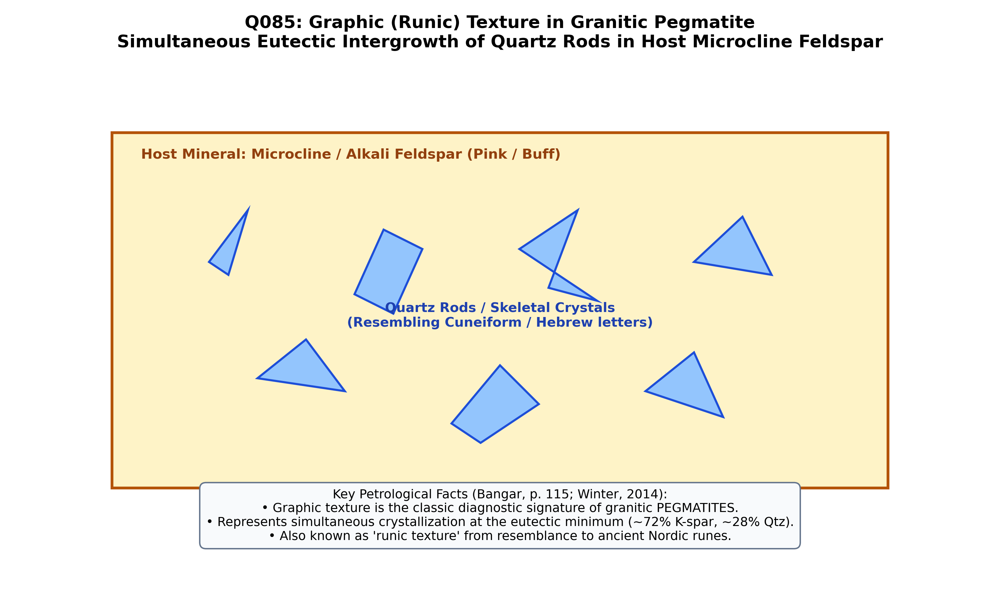
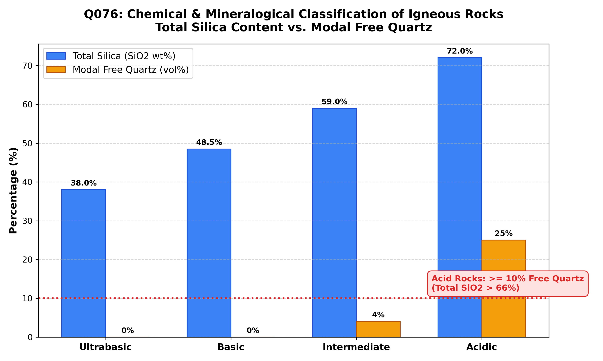
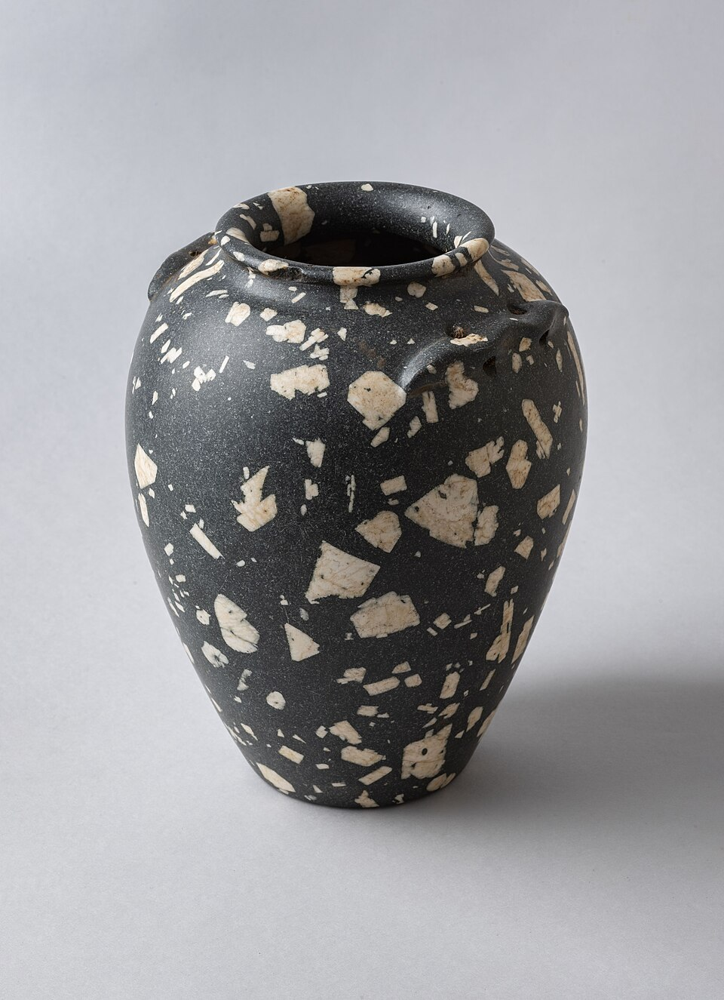
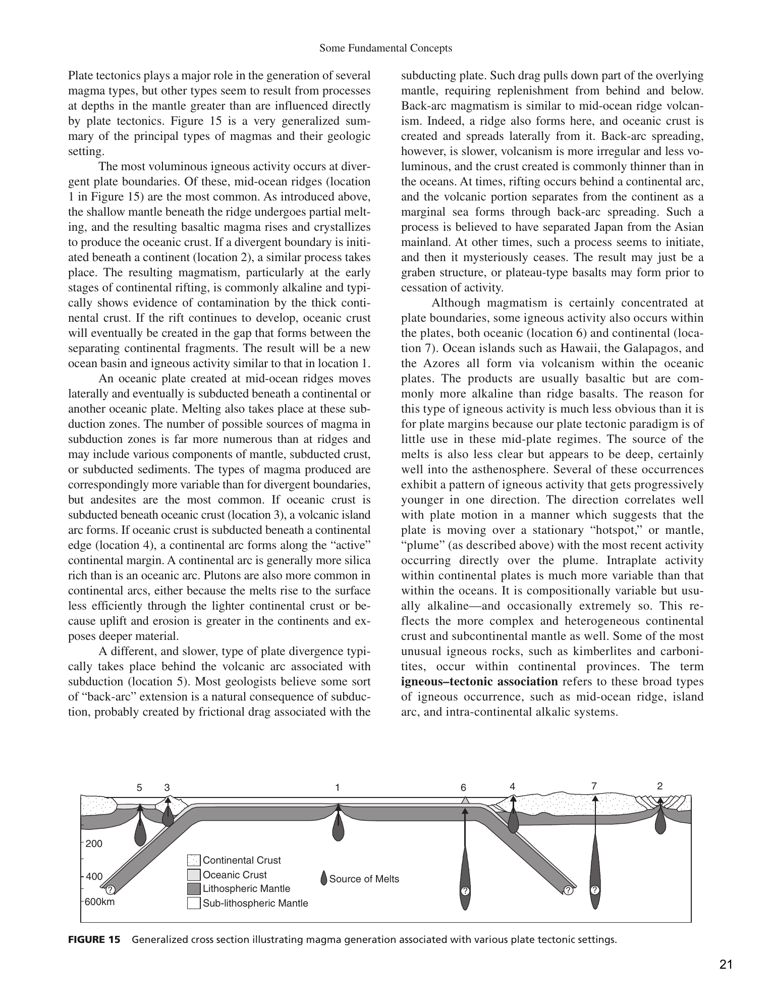

5.1 Rocks and the Rock Cycle
Rocks form the solid crust of the Earth and are defined as naturally occurring aggregates of one or more minerals (or volcanic glass). Based on their mode of origin, rocks are divided into three great classes: 1. Igneous Rocks (formed by cooling and solidification of molten magma), 2. Sedimentary Rocks (formed by weathering, transport, deposition, and lithification of pre-existing rocks or chemical/biological precipitation), and 3. Metamorphic Rocks (formed by solid-state recrystallization of pre-existing rocks under elevated temperature, pressure, and chemically active fluids).
5.2 Nature and Crystallization of Magma


Magma is a naturally occurring hot, mobile silicate melt ($650^\circ\text{--}1,250^\circ\text{C}$) generated within the upper mantle or lower crust, containing dissolved volatile gases ($\text{H}_2\text{O}, \text{CO}_2, \text{HF}, \text{SO}_2$). When magma erupts onto the surface and loses its volatiles, it is termed Lava.
Bowen's Reaction Series (1922). N. L. Bowen demonstrated that as basaltic magma cools, minerals crystallize in a definite sequential order along two converging branches: (i) Discontinuous Branch (Olivine $\to$ Mg-Pyroxene $\to$ Amphibole $\to$ Biotite Mica) and (ii) Continuous Branch (Calcic Plagioclase Anorthite $\to$ Intermediate Labradorite/Andesine $\to$ Sodic Albite). Both branches merge into late-stage low-temperature Orthoclase Feldspar, Muscovite, and residual Quartz ($\text{SiO}_2$). Separation of early crystals from the melt (fractional crystallization) enables a single parental magma to generate basalt, andesite, and granite.
5.3 Forms of Igneous Rock Bodies


Igneous intrusions are classified as Concordant (injected parallel to bedding planes of country rock) or Discordant (cutting across bedding planes):
Concordant Bodies. Sill (thin tabular sheet injected horizontally between strata), Laccolith (mushroom/dome-shaped lens arching up overlying strata), Lopolith (saucer-shaped depressed basin, e.g., Bushveld complex), and Phacolith (crescent-shaped lens occupying crests/troughs of folds).
Discordant Bodies. Dyke / Dike (steep wall-like tabular intrusion cutting across strata), Volcanic Neck (cylindrical solidified conduit of an extinct volcano), Stock / Boss (moderate pluton $<100\text{ km}^2$), and Batholith (enormous deep-seated plutonic mass $>100\text{ km}^2$ emplaced by magmatic stoping in mountain belts).
5.4 Textures and Structures of Igneous Rocks


Texture describes the degree of crystallinity, grain size, and mutual geometric relationships of mineral grains, controlled primarily by cooling rate:
1. Degree of Crystallinity. Holocrystalline (100% crystals, slow plutonic cooling), Hemicrystalline / Hypocrystalline (crystals + glass, hypabyssal/volcanic), and Holohyaline (100% volcanic glass, rapid quenching, e.g., obsidian).
2. Grain Size. Phaneritic (coarse/medium grains visible to naked eye: granite, gabbro) vs. Aphanitic (microscopic grains: basalt, rhyolite).
3. Diagnostic Mutual Textures. Equigranular (granitic hypidiomorphic), Porphyritic (large phenocrysts embedded in a fine groundmass due to two-stage cooling), Ophitic (lath-shaped plagioclase crystals enclosed within large augite plates, characteristic of dolerite), Poikilitic, and Graphic (runic intergrowth of quartz in orthoclase in pegmatite).
Igneous Structures. Include Vesicular and Amygdaloidal (gas cavities empty or filled with secondary zeolites/calcite in basalts), Columnar Jointing (hexagonal cooling prisms), Pillow Structure (underwater lava eruptions), and Flow Banding.
5.5 Classification and Description of Common Igneous Rocks

Igneous rocks are classified by silica content (Acid, Intermediate, Basic, Ultrabasic) and depth of formation (Plutonic coarse-grained, Hypabyssal medium/porphyritic, Volcanic fine/glassy):
Granite (Plutonic Acid) & Rhyolite (Volcanic). Essential minerals: Quartz ($>20\%$) and Alkali Feldspars (orthoclase/microcline), with accessory biotite or hornblende. Granite is light-coloured, phaneritic, and an ideal high-strength foundation and dimension stone.
Syenite (Plutonic) & Trachyte (Volcanic). Intermediate alkaline rocks composed mainly of alkali feldspar with hornblende or biotite, and little or no quartz ($<5\%$).
Diorite (Plutonic Intermediate) & Andesite (Volcanic). Composed of intermediate plagioclase (andesine/oligoclase) and hornblende/biotite.
Gabbro (Plutonic Basic), Dolerite (Hypabyssal), & Basalt (Volcanic). Dark melanocratic rocks rich in calcic plagioclase (labradorite) and augite ($\pm$ olivine). Dolerite exhibits ophitic texture; Basalt forms extensive plateau flood lavas (Deccan Traps) and is widely used as concrete aggregate and road metal.
Peridotite & Dunite (Ultrabasic). Silica-poor ($<45\%$), heavy dark rocks composed almost entirely of olivine and pyroxenes, hosting chromite and diamond-bearing kimberlites.
Pegmatite. Exceptionally coarse-grained late-stage granitic dikes (crystals $>3\text{ cm}$ to several metres) rich in quartz, orthoclase, muscovite books, tourmaline, beryl, and rare-metal ores.
Chapter Review Questions (K. M. Bangar)
1. Explain Bowen's Reaction Series and its significance in magmatic differentiation.
2. Describe with neat sketches the concordant and discordant forms of igneous intrusions (sill, laccolith, lopolith, phacolith, dyke, batholith).
3. Define texture and describe porphyritic, ophitic, graphic, and vesicular/amygdaloidal textures.
4. Classify igneous rocks based on silica percentage and depth of formation, and describe the mineralogy and engineering uses of Granite, Dolerite, and Basalt.
Visual Reference Gallery (Clean Color Diagrams & Specimens)
Supplementary full-color diagrams from Winter, Perkins, Fossen, Boggs and high-resolution USGS/Wikimedia photographs replacing scanned textbook drawings.



